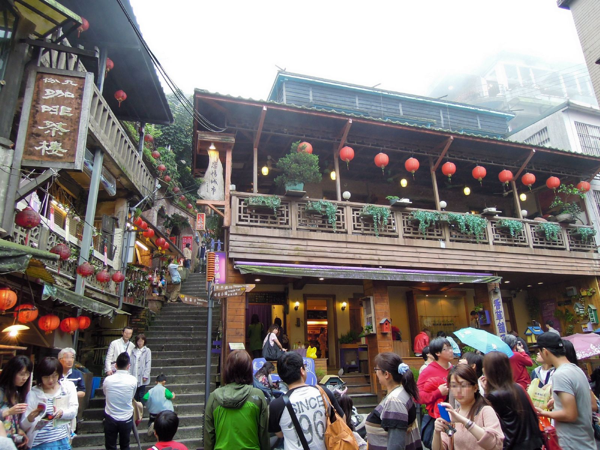
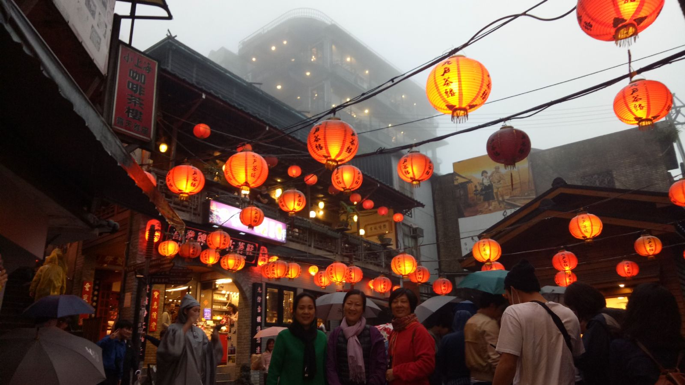

台北-九份老街


與日本動畫大師宮崎駿電影場景相似的「九份老街」，街道由「三橫一豎」等四條道路為主，被許多階梯圍繞，
別具特色。孤懸在山丘上的九份山城，以能鳥瞰基隆嶼山海險峙，霧雨迷濛的美景而聞名。在九份老街可逛逛特色紀念品店，
及品嚐在地美食，沿路上充滿懷舊的建築也讓人不禁駐足欣賞，若是想暫時遠離熙嚷的街道，不妨走入九份的茶屋，
九份的茶屋各具特色，除了品茗之餘，包括陶瓷茶具的捏製巧思、來自臺灣產地的各式茶葉、茶的烹煮方式與茶道、茶屋的設計與生活美學、精緻茶點餐飲及四季晨晚各異的山城景緻，
駐足在此泡上一壺好茶，享受悠閒的時光，欣賞專屬的山城美景。夜晚的九份，商家燈火鼎盛的美麗景象，別有一番風味，不妨在此留宿一晚，感受有別於白日的不夜風情。
自行開車：
國道1號-八堵交流道下-省道臺62線-瑞芳交流道下-省道臺2丁線-縣道102線。
大眾運輸：
搭高鐵或臺鐵至臺北站下-轉搭臺北捷運至忠孝復興站下-轉搭基隆客運(往金瓜石)至九份站下。
註：基隆客運搭車處原忠孝東路改為復興南路。
自行開車：
國道1號-八堵交流道下-省道臺62線-瑞芳交流道下-省道臺2丁線-縣道102線。
大眾運輸：
搭高鐵或臺鐵至臺北站下-轉搭臺北捷運至忠孝復興站下-轉搭基隆客運(往金瓜石)至九份站下。
註：基隆客運搭車處原忠孝東路改為復興南路。
地點:九份老街
地址:新北市瑞芳區基山街
相關連結:https://www.travel.taipei/zh-tw/attraction/details/298
地址:新北市瑞芳區基山街
相關連結:https://www.travel.taipei/zh-tw/attraction/details/298